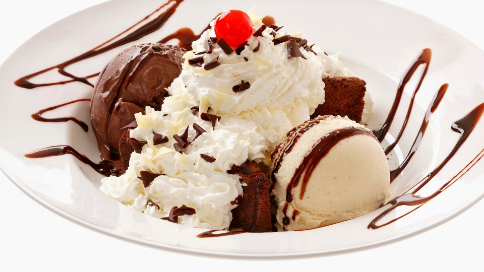
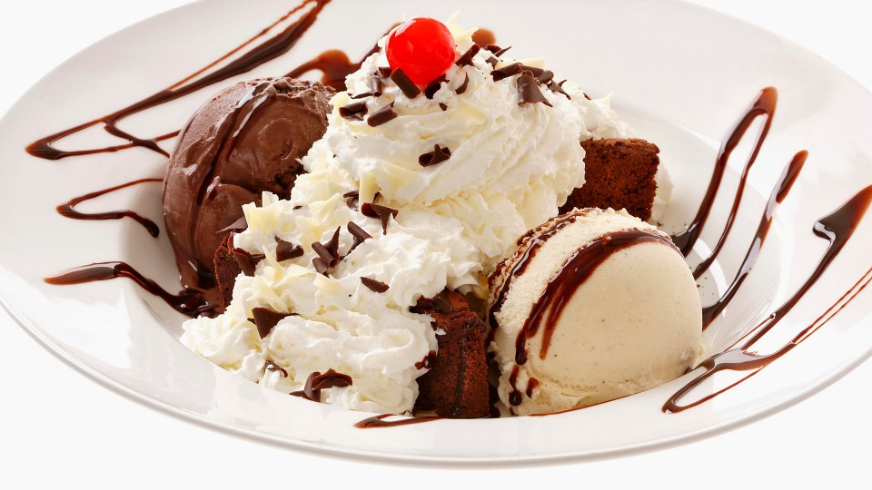

SIEMPRE FRESCO
Barbara Martel, empresaria y amante del helado, pone en marcha la ilusión de su vida: un local propio que empezó como una heladería de barrio. Así, en 1997, nace MOCHI, heladería artesanal. Su dedicación y el máximo cuidado por los detalles, así como su fuerte apuesta por productos de calidad, le convirtieron rápidamente en una heladería de éxito. Hoy, 20 años después y tras una gran renovación de imagen, MOCHI es el principal referente de postres helados en latinoamérica, y con su lema SIEMPRE FRESCO
sigue rompiendo fronteras.
 
